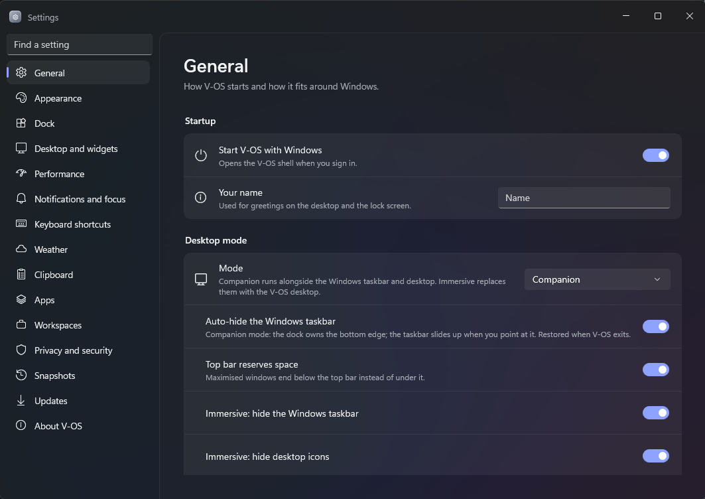
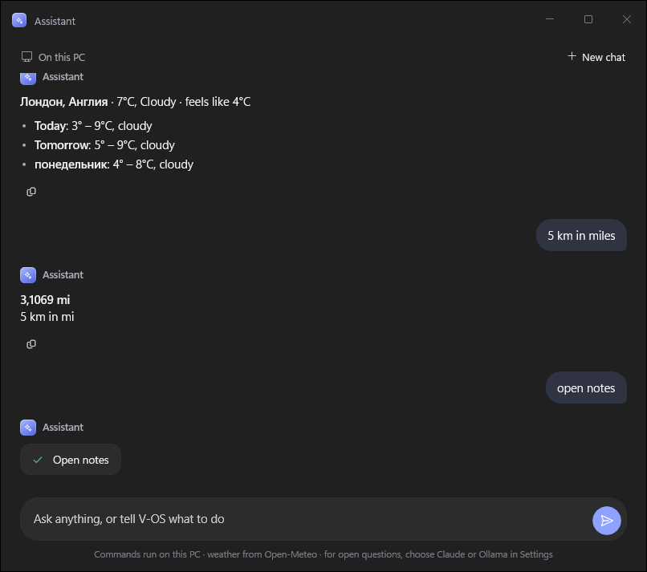

V-OS
A premium desktop environment for Windows.
A top bar, the living V-Pill, a dock, a command bar and fifteen apps that work together, on top of the Windows you already have. Your files, apps and games stay where they are.
One desktop, designed as a whole
Every part of V-OS knows about the others: music and timers live in the V-Pill, the command bar runs actions, workspaces switch everything at once, and performance profiles change what is drawn.
Top bar, V-Pill and dock
Live activities in a capsule that expands into controls. A dock for your apps. Control and activity centers one click away.
Command bar
Alt+Space to open apps, find files and settings, calculate, convert units, or just say timer 10 min, dark mode, workspace work.
Assistant
Offline commands on your PC, or Claude with your own key: answers questions and acts for you, always showing what it did.
Workspaces
Personal, Work, Study, Gaming, Media, Minimal: theme, wallpaper, dock, focus and apps switch together, and come back as you left them.
Adaptive performance
Quality, Balanced, Performance and Minimal profiles really change effects and animations; Adaptive picks one for your hardware and power.
Safe by design
No administrator rights, signed updates that roll back on their own if something fails, and one shortcut to put Windows back exactly as it was.
Fifteen apps that belong together
Built in the same design language, sharing the same services, and all of them light enough to open in about a second.


Install in a minute
V-OS installs for your account only, in %LOCALAPPDATA%\Programs\V-OS. Nothing in Windows security is changed, and you can remove it at any time from Windows Settings › Apps.
Download
Get V-OS-1.0.0-setup.zip from the latest release and unzip it.
Run V-Launcher.exe
It checks the release signature and the package checksum before anything is installed.
Start V-OS
Choose Companion or Immersive mode. Ctrl+Alt+Shift+F12 restores the Windows desktop at any moment.
The executables are not code-signed yet, so Windows SmartScreen may warn on first run: choose More info → Run anyway. You can compare the files with SHA256SUMS.txt from the release.
Private by default
V-OS keeps your data on your PC. Online services are used only for features you turn on, and every one of them is listed in the privacy notes.
No usage data, no analytics, no ads.
Nothing to sign up for.
Cloud AI and online translation ask before anything is sent.
API keys are protected by Windows for your account.